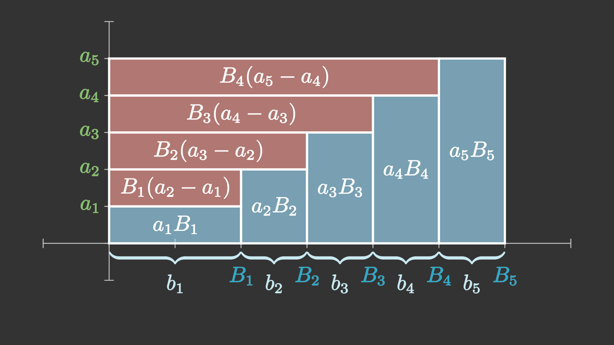

数列的求和
\[
usepackage{dsfont}
\def\degree{{}^{\circ}}
\newcommand{\d}{\mathrm{d}}
\def\e{\mathrm{e}}
\def\i{\mathrm{i}}
\]
我们先简单了解一下连加号，随后讲述数列的基本求和方法。
求和和不定积分一样，并没有固定的方法。以下我们只是总结了一部分常用的求和方法。
除了这些求和方法以外，还有很多其他的求和方法。甚至，还有很多函数的求和式无法用初等函数或者各种常见的函数表达。
Tip
连加号和积分实际上存在某种程度的对应，前者是离散的累积，后者是连续的累积。
很多的离散公式，其对应的有一个连续的版本，而离散就对应求和，连续就对应不定积分或定积分。
当有相似的公式时，可以将它们类比记忆。
连加号的概念和基本性质
连加号的定义
在数学上，若干个数（或其他数学对象）连续相加的表达式
\[
a_m + a_{m+1} + a_{m+2} + \cdots + a_n
\]
（其中\(m,n \in \mathbb{Z}\)，且\(m < n\))非常常见。为了简便，我们通常将它记作：
\[
\sum_{k=m}^n a_k.
\]
其中符号\(\sum\)称为连加号，实际上就是希腊字母\(\Sigma\)(Sigma)，\(a_k\)则表示一般项，而下标中\(k\)为求和指标，它只是一个辅助的变量（可以类比编程函数的局部变量），标记求和中改变的值。下标\(k=m\)和上标\(n\)共同表示\(k\)从\(m\)以步长1递增到\(n\)（也就是，取\(m,m+1,m+2,\dots,n\)）
只要不与其他变量冲突，辅助变量的字母是任意的，通常取\(i,j,k,m,n\)。
Notation
连加号的上限也可能为无穷大\(\infty\)：
\[
\sum_{n=1}^{\infty} (-1)^{n+1} \frac{1}{n}.
\]
这种情况的连加号表示无穷项相加，是一个级数。我们这里只讨论有限项的连加，不考虑无限项相加的情况。
以下是一些连加号的使用举例：
Example
数列\(a_n = n\)的前\(n\)项和为：
\[
\sum_{i=1}^{n} i = 1 + 2 + \cdots + n.
\]
二项式定理可以表示为：
\[
(x + y)^n = \sum_{k = 0}^{n} \mathrm{C}_n^k x^k y^{n-k}.
\]
在回归分析中，经过样本点\((x_1,y_1),(x_2,y_2),\dots,(x_n,y_n)\)的拟合直线（目标函数使用最小二乘函数）的斜率估计值可以表示为：
\[
\hat{k} = \frac{\displaystyle \sum_{i=1}^n (x_i - \bar{x}) (y_i - \bar{y})}{\displaystyle \sum_{i=1}^n (x_i - \bar{x})^2 }.
\]
连加号也不一定表示数的相加。高等代数中线性子空间的和\(V_1 + V_2 + \cdots + V_n\)也可以表示为
\[
\sum_{i=1}^n V_i.
\]
Tip
很多时候，数学书上的公式为了简便会写成连加号。
但其实，连加号看起来并不是很直观。所以当你感到难以理解时，应该将连加号展开，写成带省略号的加和表达式。很多时候，只是这样小小的一步，一个表达式瞬间就清晰了很多。
条件求和
有些时候求和号是对满足某种关系的项进行求和，这时候\(\sum\)下写的就是需要满足的关系。
例如，两个多项式\(p(x) = \displaystyle \sum_{k=0}^m a_k x^k\)，\(q(x) = \displaystyle \sum_{k=0}^n b_k x^k\)的乘积的\(k\)次项的系数可以写为：
\[
c_k = \sum_{i + j = k} a_i b_j.
\]
这里表示将下标之和为\(k\)的项乘起来，i.e.
\[
c_k = a_0 b_k + a_1 b_{k-1} + a_2 b_{k-2} + \dots + a_k b_0.
\]
连加号的基本性质
连加号本质上就是几个数之间加法的简写，所以自然地有以下性质：
可加性
\[
\sum_{k=m}^n (x_k + y_k) = \sum_{k=m}^n x_k + \sum_{k=m}^n y_k .
\]
这条规律由加法的结合律容易看出来，这也是分组求和法的基础。
Proof
回忆上面的Tip，我们只需要将左边展开写成和式：
\[
\begin{align}
\sum_{k=m}^n (x_k + y_k) =& (x_m + y_m) + (x_{m+1} + y_{m+1}) + \cdots + (x_n + y_n)\\
=& (x_m + x_{m+1} + \cdots + x_n) + (y_m + y_{m+1} + \cdots + y_n)\\
=& \sum_{k=m}^n x_k + \sum_{k=m}^n y_k.\\
\end{align}
\]
其中第二个等号利用了结合律。
这再次印证了上面这句话：当你感到难以理解时，应该将连加号展开，写成带省略号的加和表达式。
一阶齐次性（常数提取）
若\(k\)是一个常数：
\[
\sum_{i=m}^n k x_i = k \sum_{i=m}^n x_i.
\]
这是乘法分配律的直接推论。
Notation
可加性和一阶齐次性可以统称为线性(linearity)。也就是说，连加号满足以下的性质：
\[
\sum_{k=m}^n (ax_k + by_k) = a\sum_{k=m}^n x_k + b\sum_{k=m}^n y_k.
\]
其中\(a\)和\(b\)是常数。
或者可以说，连加计算是一个线性映射(Linear map)或者线性泛函(Linear functional)。
交换次序
\[
\sum_{i=1}^m \sum_{j=1}^n a_{ij} = \sum_{j=1}^n \sum_{i=1}^m a_{ij}
\]
这也是加法交换律和加法结合律的直接推论。
Notation
对于交换次序这个性质，一种直观的理解就是，表格中的数可以先按列求和、再按行求和，也可以先按行求和、再按列求和，例如：
|
第一列 |
第二列 |
第三列 |
行合计 |
| 第一行 |
1 |
2 |
3 |
6 |
| 第二行 |
4 |
5 |
6 |
15 |
| 第三行 |
7 |
8 |
9 |
24 |
| 列合计 |
12 |
15 |
18 |
45 |
这里第四行的“列合计”可以看作先按列求和，而第四列的“行合计”可以看作先对行求和，但是汇总后，列合计的三个数之和，也等于行合计的三个数之和。
Warning
研究连加号交换次序的性质时，我们针对的都是有限项的求和，要求两个求和指标都是对有限个求和。
这个结论不能轻易推广到无限项相加（级数），在级数上未必成立！
条件求和中的交换次序
在数论等领域还经常出现条件求和的交换次序问题。
设 \(i\) 的取值范围为 \(A\)，\(j\) 的取值范围则与 \(i\) 有关，记为 \(B(i)\)，则求和号的交换法则如下：
\[
\sum_{i \in A} \sum_{j \in B(i)} x_{ij} = \sum_{j \in \bigcup_{i \in A} B(i)} \sum_{i \in \{i \in A: j \in B(i)\}} x_{ij}
\]
以上知识参考自 Westlifer 的文章。
常数、等差、等比数列的求和
这是三个基本公式。
- 若\(a_n = a\)(\(a\)为常数)，则\(S_n = na\)。
- 若\(a_n\)为等差数列，也就是\(a_n = a_1 + d(n - 1)\)，则：
\[
\begin{align}
S_n
=& \frac{(a_1+a_n)n}{2} \\
=& a_1 n + \frac{dn(n-1)}{2} \\
=& \left( a_1 - \frac{d}{2} \right) n + \frac{d}{2} n^2.
\end{align}
\]
- 若\(a_n\)为等比数列，也就是\(a_n = a_1 q^{n-1}\)，则：
\[
S_n = \frac{a_1(1-q^n)}{1-q}
\]
第一个公式是显然的，依据就是乘法的定义；而等差、等比两个公式，证明方法将在下面展示。
高中常见的求和方法
以下的几种求和方法在高中已经很常见，现在罗列出来供大家参考。
倒序相加法/两两组合
倒序相加法针对的是有中心对称点的数列。
当一个数列\(\{a_n\}\)有中心对称点\((m,s)\)时（\(m\)为整数，或小数部分为\(0.5\)的有理数），对称位置的两项\(a_{m-r},a_{m+r}\)便可以凑在一起，这样它们的和就是\(a_{m-r} + a_{m+r} = 2s\)。
最经典的例子便是等差数列求和，我们推理如下：
等差数列求和公式推导
设等差数列\(\{a_n\}\)的公差为\(d\)，其前\(n\)项和为\(\{S_n\}\)，那么
\[
S_n = a_1 + a_2 + \cdots + a_n,
\]
注意到\(a_1 + a_n\)，\(a_2 + a_{n-1}\)，\(a_3 + a_{n-2}\)……都相等，将\(S_n\)反写一遍，有：
\[
S_n = a_n + a_{n-1} + \cdots + a_1,
\]
两式相加，注意对应项有\(n\)个，得到：
\[
2 S_n = n(a_1 + a_n),
\]
这也就是：
\[
S_n = \frac{(a_1 + a_n)n}{2}.
\]
除了等差数列以外，再也没有数列的任意前\(n\)项的图像都是中心对称的了。所以倒序相加法用于其他数列时，基本上只能求出某个特定的和式，而不能求任意\(n\)的和。
例题
- 求和：\(\displaystyle \sum_{k=1}^{89} \sin^2{k\degree}.\)
Solution
注意到函数（通项）\(f(x) = \sin^2{x}\)关于点\((45\degree,1/2)\)中心对称，所以可以使用倒序相加法。
\[
\begin{align}
S_n &= \sin^2{1\degree} &+ \sin^2 {2\degree} &+ \cdots + \sin^2{89 \degree}, \\
S_n &= \sin^2{89\degree} &+ \sin^2 {88\degree} &+ \cdots + \sin^2{1 \degree}; \\
\end{align}
\]
两式相加，注意到\(\sin^2{\alpha} + \sin^2(90\degree - \alpha) = 1\)，所以得到89项1，于是有：
\[
S_n = \frac{89}{2}.
\]
Tip
可以类比定积分：当\(f(x)\)是关于\((a,f(a))\)的中心对称函数时，若\(f(x)\)在\([a-r,a+r]\)可积，那么就有：
\[
\int_{a-r}^{a+r} f(x) \mathrm{d}x = 2rf(a).
\]
它们的几何意义都很显然。
实际上，定积分的这个等式，可以用离散求和方法直接推导。
错位相减法
错位相减法，就是将数列的和式错开一位进行相减。这种方法主要用于等比数列和形如\((kn+b)q^n\)的等差等比数列乘积（一般称为差比数列）。
我们利用这种方法推导等比数列求和公式：
等比数列求和公式推导
设等比数列\(\{ a_n \}\)的公比为\(q\)，前\(n\)项和为\(S_n\)。利用\(a_n = a_1 q^{n-1}\)，我们可以将\(S_n\)写为：
\[
S_n = a_1 + a_1 q + a_1 q^2 + \cdots + a_1 q^{n-2} + a_1 q^{n-1};
\]
我们注意到，将以上公式乘上\(q\)后，有很多重复项。在这个思路启发下，我们将上式乘以\(q\)，得到
\[
\begin{align}
S_n &= a_1 + &a_1 q + &a_1 q^2 +& \cdots + & a_1 q^{n-1};\tag{1}\\
qS_n &= &a_1 q + &a_1 q^2 +& \cdots + & a_1 q^{n-1} + a_1 q^n;\tag{2}\\
\end{align}
\]
用\((1)\)式减去\((2)\)式，得到：
\[
(1-q) S_n = a_1 - a_1 q^n.
\]
所以有：
\[
S_n = \frac{a_1 (1 - q^n)}{1-q}.
\]
这就是等比数列的求和公式。
在已知等比数列求和公式的基础上，我们可以再利用等比数列对差比数列求和：
例题
已知\(a_n = n \cdot 2^{n-1}\)，求前\(n\)项和\(S_n\)。
Solution
利用错位相减法。
\[
\begin{align}
&S_n = 1 \times 2^0 +& 2 \times 2^1 + \cdots +& n \cdot 2^{n-1}, \tag{1}\\
&2S_n =& 1 \times 2^1 + \cdots +& (n-1) \cdot 2^{n-1} + n \cdot 2^n; \tag{2}\\
\end{align}
\]
\((2) - (1)\)得：
\[
S_n = - ( 2^0 + 2^1 + \cdots + 2^{n-1} ) + n \cdot 2^n;
\]
利用等比求和公式，将括号内的等比数列求和，整理得到：
\[
S_n = (n-1) \cdot 2^n + 1
\]
Tip
这个数列的求和方法不止一种，下面还会出现多次。
一般地，可以推导，对于差比数列\(\{ (kn+b)q^{n-1} \}\)，利用公式：
\[
A=\frac{k}{q-1}, B=\frac{b-A}{q-1};
\]
则数列的前\(n\)项和可以表示为
\[
S_n = (An+B)q^n-B.
\]
裂项法
将一个数列的每一项拆成两项之和，并且在求和过程中项与项之间某些部分可以抵消，剩下前面几项和后面几项，或者化为一个简单数列的求和，这种方法就是裂项法。
以最典型的数列为例：
裂项法典例
设\(a_n = \displaystyle \frac{1}{n(n+1)}\)，求数列\(\{ a_n \}\)的前\(n\)项和。
Solution
将数列\(\{ a_n \}\)拆为两项：
\[
a_n = \frac{1}{n(n+1)} = \frac{1}{n} - \frac{1}{n+1},
\]
那么数列\(\{ a_n \}\)的前\(n\)项和为：
\[
\begin{align}
S_n &= a_1 + a_2 + a_3 + \cdots + a_n \\
&= 1 - \frac{1}{2} + \frac{1}{2} - \frac{1}{3} + \frac{1}{3} - \frac{1}{4} + \cdots + \frac{1}{n} - \frac{1}{n+1} \\
&= 1 - \frac{1}{n+1}.
\end{align}
\]
除了将分式拆开，裂项法还有很多其他技巧，例如：
等比数列求和
这里我们也可以用裂项法对等比数列\(a_n = a_1 q^{n-1}\)求和。
观察到指数函数相邻两项之差可以写为：
\[
a^{k+1} - a^k = a \cdot a^k - a^k = a^k (a-1),
\]
所以
\[
a^k = \frac{a^{k+1} - a^k}{a-1},
\]
所以可以将等比数列的通项\(a_1 q^{n-1}\)裂项为：
\[
a_1 q^{n-1} = \frac{a_1}{q-1}(q^n - q^{n-1}),
\]
求和得到：
\[
\begin{align}
S_n &= a_1 + a_2 + \cdots + a_n \\
&= \frac{a_1}{q-1} [(q^1 - q^0) + (q^2 - q^1) + \cdots + (q^n - q^{n-1})] \\
&= \frac{a_1}{q-1} (-q^0 + q^n) \\
&= \frac{a_1(q^n - 1)}{q-1}.
\end{align}
\]
这是等比数列求和公式的另一种推导方法。
Example
已知\(a_n = n \cdot 2^{n-1}\)，求前\(n\)项和\(S_n\)。
分组求和
分组求和的本质，就是利用求和符号的可加性、交换次序，将原数列拆成多个可求和的数列；或者是利用加法结合律，将数列拆成多个子列进行计算（例如分奇偶求和）。
Example
计算差比数列\(\{ n2^{n-1} \}\)的前\(n\)项和。
Solution
嗯，差比数列还可以用分组求和法来求...是不是很神奇awa
设前\(n\)项和为\(S_n\)，那么有：
\[
S_n = 1\times 2^0 + 2\times 2^1 + 3\times 2^2 + \cdots + n\cdot 2^{n-1},
\]
我们把其中的系数展开，写为这样：
\[
S_n = 2^0 + (2^1 + 2^1) + (2^2 + 2^2 + 2^2) + \cdots + (\underbrace{2^{n-1} + \cdots + 2^{n-1}}_{n\text{个}}), \tag{*}
\]
然后我们对数列进行重组，得到：
\[
\begin{align}
S_n &= (2^0 + 2^1 + 2^2 + \cdots + 2^{n-1}) \\
&+ (2^1 + 2^2 + \cdots + 2^{n-1} ) \\
&+ (2^2 + \cdots + 2^{n-1}) \\
&+ \cdots \\
&+ 2^{n-1}, \tag{**}
\end{align}
\]
这个过程用一个数表来表示则更加清楚：
\[
\begin{pmatrix}
2^0 & 2^1 & 2^2 & \cdots & 2^{n-1} \\
& 2^1 & 2^2 & \cdots & 2^{n-1} \\
& & 2^2 & \cdots & 2^{n-1} \\
& & & \ddots & \vdots \\
& & & & 2^{n-1} \\
\end{pmatrix}
\]
从\((*)\)到\((**)\)的过程便可以视为：将上述矩阵从先按列求和，变为了先按行求和。或者，我们也可以用求和符号简记为：
\[
\sum_{i=1}^n \sum_{j=1}^i 2^{i-1} = \sum_{j=1}^n \sum_{i=j}^n 2^{i-1}; \tag{***}
\]
矩阵中每一行的求和都是一个等比数列求和，我们可以算出第\(j\)行的和为：
\[
\sum_{i=j}^n 2^{i-1} = 2^{j-1} \sum_{k=0}^{n-j} 2^k = 2^n -2^{j-1},
\]
再对每一行的和求和，得到：
\[
\begin{align}
S_n =& \sum_{j=1}^n 2^n - 2^{j-1} \\
=& n2^n - 2^n + 1 \\
=& (n-1)2^n+1.
\end{align}
\]
思考
在等式\((***)\)中，我们交换了连加号的顺序，为何与此同时连加号的上下限也改变了？这与前面“交换次序”的性质矛盾吗？
提示
与条件求和的交换次序有关。
与重积分的关系
如果您已经学到二重积分，将连加号的性质对应到微积分中，二次积分可以交换次序：
\[
\int_0^1 \d x \int_0^x f(x,y) \d y = \int_0^1 \d y \int_y^1 f(x,y) \d x.
\]
交换次序的时候，其上下限为什么这样改变？这种改变与等式\((***)\)中连加号交换顺序有什么关系？
转化
求和的其他方法
这些方法在高中可能没有直接涉及，但是也是常用的求和方法。
导数法
导数法针对的是某些导函数容易求和的特性，将原函数转化为导函数。
注意到这个的结论：如果\(f(x) = g(x)\)，那么\(f'(x) = g'(x)\)（即使两者形式不同）。
我们依然以差比数列为例：
Example
已知\(a_n = n \cdot q^{n-1}\)，求前\(n\)项和\(S_n\)。
Solution
我们可以发现，对于函数\(f(x) = x^n\)，求导后得到\(f'(x) = n x^{n-1}\)。也就是说，如果把\(x\)看作公比，幂函数（等比数列）求导后会变成差比数列。
那么就有：
\[
(x^1 + x^2 + x^3 + \cdots + x^n)' = 1 + 2x + 3x^2 + \cdots + nx^{n-1};
\]
又有：
\[
x^1 + x^2 + \cdots + x^n = \frac{x(1-x^n)}{1-x},
\]
所以有：
\[
1 + 2x + 3x^2 + \cdots + nx^{n-1} = \left[ \frac{x(1-x^n)}{1-x} \right]';
\]
这样，只需求出右边的导数，再将\(x=q\)代入，就得到了求和结果。
求导得：
\[
\begin{align}
& \left[ \frac{x(1-x^n)}{1-x} \right]' \\
=& \frac{[(1-x^n)+x\cdot(-nx^{n-1})] (1-x)-x(1-x^n)(-1)}{(1-x)^2} \\
=& \frac{1-x^n-nx^n+nx^{n+1}}{(1-x)^2} \\
=& \left[ \frac{n}{x-1} - \frac{1}{(x-1)^2} \right] x^n + \frac{1}{(x-1)^2}.
\end{align}
\]
所以有：
\[
S_n = \left[ \frac{n}{q-1} - \frac{1}{(q-1)^2} \right] q^n + \frac{1}{(q-1)^2}.
\]
可以看到这与前面所说的\((An+B)q^n-B\)一致。
一些补充的例题见下：
导数法例题
\[
\sum_{k=1}^n \sin{kx} = \frac{\sin{\displaystyle \frac{nx}{2}}\sin{\displaystyle \frac{(n+1)x}{2}}}{\sin{\displaystyle \frac{x}{2}}}.
\]
（该公式的推导见下文“三角函数求和”一节）
求数列\(a_n = n \cos{nx}\)（\(x \ne 2k\pi, k\in \mathbb{Z}\)）的前\(n\)项和。
Solution
可以发现\((\sin{nx})' = n\cos{nx}\)，所以有：
\[
\cos{x} + 2\cos{2x} + \cdots + n\cos{nx} = (\sin{x} + \sin{2x} + \cdots + \sin{nx})'.
\]
利用上面的公式，将括号内的部分求和，于是：
\[
\sum_{k=1}^n k\cos{kx} = \left( \frac{\sin{\displaystyle \frac{nx}{2}}\sin{\displaystyle \frac{(n+1)x}{2}}}{\sin{\displaystyle \frac{x}{2}}} \right)'.
\]
于是求导就有：
\[
\sum_{k=1}^n k\cos{kx} = \frac{(n+1)\cos{nx} - n\cos{(n+1)x} - 1}{4 \sin^2 \frac{x}{2}}
\]
Abel变换
设\(\{a_n\},\{b_n\}\)是两个数列，\(\{B_n\}\)是\(\{b_n\}\)的前\(n\)项和，那么有：
\[
\sum_{k=1}^n a_k b_k = a_n B_n - \sum_{k=1}^{n-1} B_k (a_{k+1}-a_k).
\]
上述定理称为阿贝尔变换(Abel transformation)，也称该公式为分部求和公式。
Abel变换的推导或证明
不妨记\(B_0 = 0\)，于是对任意正整数\(n\)，都满足\(b_n = B_n - B_{n-1}\)。
所以
\[
\begin{align}
\sum_{k=1}^n a_k b_k
=& \sum_{k=1}^n a_k (B_k - B_{k-1}) \\
=& \sum_{k=1}^n (a_k B_k - a_k B_{k-1}) \\
=& \sum_{k=1}^n a_k B_k - \sum_{k=1}^n a_k B_{k-1} \\
=& a_n B_n + \sum_{k=1}^{n-1} a_k B_k - \sum_{k=1}^n a_k B_{k-1} \\
=& a_n B_n + \sum_{k=1}^{n-1} a_k B_k - \sum_{k=2}^n a_k B_{k-1} + a_1 B_0 \\
=& a_n B_n + \sum_{k=1}^{n-1} a_k B_k - \sum_{k=2}^n a_k B_{k-1} \\
=& a_n B_n + \sum_{k=1}^{n-1} a_k B_k - \sum_{k=1}^{n-1} a_{k+1} B_{k} \\
=& a_n B_n - \sum_{k=1}^{n-1} (a_{k+1} - a_k) B_{k}.
\end{align}
\]
Tip
Abel变换可以结合图形的面积进行记忆：

（该图片由manim生成）
如图所示，小矩形的面积之和\(a_1 b_1 + \cdots + a_n b_n\)就等于大矩形\(a_n B_n\)减去另一部分小矩形之和\(B_1 (a_2 - a_1) + \cdots + B_{n-1} (a_n - a_{n-1})\)。
Warning
Abel变换中，第二个连加号的上限是\(n-1\)。也就是说，这里上限改变了，从\(n\)变成了\(n-1\)。
应用Abel变换的时候这里很容易出错，请务必细心。
Tip
可以发现这个公式和分部积分公式十分相似。如果记\(G(x) = \displaystyle \int_a^x g(t) \mathrm{d}t\)，那么分部积分公式可以写成：
\[
\int_a^b f(x)g(x) \mathrm{d}x = f(b)G(b) - \int_a^b G(x)\mathrm{d}f(x),
\]
而如果记\(\Delta a_k = a_{k+1} - a_k\)，Abel变换可以写成：
\[
\sum_{k=1}^n a_k b_k = a_n B_n - \sum_{k=1}^{n-1} B_k \Delta a_k,
\]
将积分看作连续的求和，而微分看作微小的差分，那么两者是一致的。
实际上，分部积分公式也可以用分部求和公式来证明。
Abel变换和分部积分公式一元，通常可以将函数降幂。
Example
求数列\(\{n2^{n-1}\}\)的前\(n\)项和。
Solution
设\(T_n = \displaystyle \sum_{k=1}^n 2^{k-1}\)，则有\(T_n = 2^n - 1\)。
利用Abel变换得：
\[
\begin{align}
&\sum_{k=1}^n k\cdot 2^{k-1}\\
= & n T_n - \sum_{k=1}^{n-1} T_k \cdot(k+1-k)\\
= & n T_n - \sum_{k=1}^{n-1} 2^k - 1\\
= & n 2^n - n - 2^n - (n - 1)\\
= & (n-1)2^n+1. \\
\end{align}
\]
Tip
求\(\{ n^m q^n \}\)这类数列的和时，都可以使用Abel变换对幂函数\(n^m\)逐级降阶。
Example
求数列\(a_n = n^2\)的和，也就是计算：
\[
1^2 + 2^2 + \cdots + n^2.
\]
Solution
我们要求数列\(\{n^2\}\)的平方和，可以将它看作两项的乘积\(\{n \cdot n\}\)，然后利用Abel变换：
\[
\begin{align}
\sum_{k=1}^n k \cdot k
=& n \cdot \frac{n(n+1)}{2} - \sum_{k=1}^{n-1} \frac{k(k+1)}{2}(k+1-k) \\
=& n \cdot \frac{n(n+1)}{2} - \sum_{k=1}^{n-1} \frac{k(k+1)}{2} \\
=& \frac{n^2(n+1)}{2} - \sum_{k=1}^{n-1} \frac{k^2}{2} - \sum_{k=1}^{n-1} \frac{k}{2}; \\
\end{align}
\]
到这里以后，我们注意到方程的两边都有\(\sum k^2\)一项，我们可以想办法把右边的一项移到等号左边。两者上限不同，但是给方程右边再补上\(n^2/2\)一项，就可以把上限凑成一样的了。我们在等号右边加上\(n^2/2\)再减去\(n^2/2\)，得到：
\[
\begin{align}
\sum_{k=1}^n k \cdot k
=& \frac{n^2(n+1)}{2} - \sum_{k=1}^{n-1} \frac{k^2}{2} - \frac{n^2}{2} - \sum_{k=1}^{n-1} \frac{k}{2} + \frac{n^2}{2} \\
=& \frac{n^2(n+1)}{2} - \left(\sum_{k=1}^{n-1} \frac{k^2}{2} + \frac{n^2}{2}\right) - \sum_{k=1}^{n-1} \frac{k}{2} + \frac{n^2}{2} \\
=& \frac{n^2(n+1)}{2} - \sum_{k=1}^{n} \frac{k^2}{2} - \sum_{k=1}^{n-1} \frac{k}{2} + \frac{n^2}{2} \\
\end{align};
\]
这样上限一样了，于是把\(\sum k^2/2\)移到右边得到：
\[
\frac{3}{2} \sum_{k=1}^n k^2 = \frac{n^2(n+1)}{2} - \sum_{k=1}^{n-1} \frac{k}{2} + \frac{n^2}{2};
\]
将右边通分、整理就得到了：
\[
\frac{3}{2} \sum_{k=1}^n k^2 = \frac{n(n+1)(2n+1)}{4};
\]
所以，这个数列的和
\[
\sum_{k=1}^n k^2 = \frac{n(n+1)(2n+1)}{6}.
\]
以上就是平方和公式的一种推导方法。
Tip
这种求和方法类似于分部积分法中的函数再现。
利用Abel变换求和的过程中如果出现再现的函数，只要它们在等号左右两边的系数不同，并且可以凑成相同的上限，就可以移到等号同一侧。
类似地，求\(1^m+2^m+\cdots+n^m\)的时候，都可以用这种方法进行降次。
特殊求和数列
三角函数求和
三角函数的典型求和式就是：
\[
\sum_{k=1}^n \sin{kx} = \frac{\sin{\displaystyle \frac{nx}{2}}\sin{\displaystyle \frac{(n+1)x}{2}}}{\sin{\displaystyle \frac{x}{2}}};
\]
\[
\sum_{k=1}^n \cos{kx} = \frac{\sin{\displaystyle\frac{(n+1)x}{2}} \cos{\displaystyle\frac{nx}{2}}}{\sin{\displaystyle\frac{x}{2}} }.
\]
求和式的推导
这种推导方法可以看作是一种另类的裂项法。
我们先推导第一个，设
\[
S_n = \sin{x} + \sin{2x} + \cdots + \sin{nx},
\]
和式乘上\(\sin(x/2)\)，利用积化和差公式
\[
\sin{x}\sin{y} = \frac{1}{2} [\cos{(x-y)} - \cos{(x+y)}]
\]
可以将该式凑出可以裂项的部分：
\[
\begin{align}
&\sin{\frac{x}{2}} \cdot S_n \\
=& \sin{\frac{x}{2}} (\sin{x} + \sin{2x} + \cdots + \sin{nx})\\
=& \sin{\frac{x}{2}}\sin{x} + \sin{\frac{x}{2}}\sin{2x} + \cdots + \sin{\frac{x}{2}\sin{nx}} \\
=& \frac{1}{2}\left[
\cos{\left(\frac{x}{2}-x\right)}-\cos{\left(\frac{x}{2}+x\right)}
\right] + \frac{1}{2}\left[
\cos{\left(\frac{x}{2}-2x\right)}-\cos{\left(\frac{x}{2}+2x\right)}
\right] + \cdots + \frac{1}{2}\left[
\cos{\left(\frac{x}{2}-nx\right)}-\cos{\left(\frac{x}{2}+nx\right)}
\right] \\
=& \frac{1}{2} \left[ \cos{\left(-\frac{x}{2}\right)} - \cos{\left(\frac{3x}{2}\right)} + \cos{\left(-\frac{3x}{2}\right)} - \cos{\left(\frac{5x}{2}\right)} + \cdots + \cos{\left(-\frac{2n-1}{2}x\right)} - \cos{\left(\frac{2n+1}{2}x\right)} \right] \\
=& \frac{1}{2} \left[ \cos{\left(\frac{x}{2}\right)} - \cos{\left(\frac{3x}{2}\right)} + \cos{\left(\frac{3x}{2}\right)} - \cos{\left(\frac{5x}{2}\right)} + \cdots + \cos{\left(\frac{2n-1}{2}x\right)} - \cos{\left(\frac{2n+1}{2}x\right)} \right] \\
=& \frac{1}{2} \left[ \cos{\left(\frac{x}{2}\right)}- \cos{\left(\frac{2n+1}{2}x\right)} \right]
\end{align}
\]
再利用和差化积公式
\[
\cos{x} - \cos{y} = -2\sin{\frac{x+y}{2}}\sin{\frac{x-y}{2}}
\]
将等式右边继续变形：
\[
\begin{align}
&\sin{\frac{x}{2}} \cdot S_n \\
=& \frac{1}{2} \left[ \cos{\left(\frac{x}{2}\right)}- \cos{\left(\frac{2n+1}{2}x\right)} \right] \\
=& -\sin{\frac{\frac{x}{2} + \frac{2n+1}{2}x}{2}}\sin{\frac{\frac{x}{2} - \frac{2n+1}{2}x}{2}} \\
=& -\sin{\frac{n+1}{2}x}\sin{-\frac{nx}{2}} \\
=& \sin{\frac{n+1}{2}x}\sin{\frac{nx}{2}}
\end{align}
\]
所以最后得到：
\[
\sum_{k=1}^n \sin{kx} = \frac{\sin{\displaystyle \frac{nx}{2}}\sin{\displaystyle \frac{(n+1)x}{2}}}{\sin{\displaystyle \frac{x}{2}}}.
\]
Exercise
类比上述方法，推导第二个等式。
提示
依然给每一项乘上\(\sin{(x/2)}\)，然后利用和差化积公式
\[
\sin{x}\cos{y} = \frac{1}{2}[\sin{(x+y)} + \sin{(x-y)}].
\]
利用复数进行推导
根据Euler公式\(\e^{\i x} = \cos{x} + i\sin{x}\)，指数函数和三角函数可以相互转换。因此我们也可以先求指数函数的和，再利用复数求三角函数。
设
\[
E_n = {\e}^{\i x} + {\e}^{2\i x} + \cdots + {\e}^{n\i x},
\]
并设
\[
S_n = \sum_{k=1}^n \sin{kx}, C_n = \sum_{k=1}^n \cos{kx};
\]
根据等比数列求和公式，容易求得
\[
\begin{align}
E_n &= {\e}^{\i x} + ({\e}^{\i x})^2 + \cdots + ({\e}^{\i x})^n \\
&= \frac{1 - {\e}^{(n+1)x\i}}{1 - {\e}^{x\i}} \\
&= \frac{1 - \cos{(n+1)x} + \i \sin{(n+1)x}}{1 - \cos{x} + \i\sin{x} },
\end{align}
\]
化简得：
\[
E_n = \csc{\frac{x}{2}} \sin{\frac{(n+1)x}{2}}
\left( \cos{\frac{nx}{2}} + \i \sin{\frac{nx}{2}} \right).
\]
而另一方面，由Euler公式，有：
\[
\begin{align}
E_n =& {\e}^{\i x} + {\e}^{2\i x} + \cdots + {\e}^{n\i x} \\
=& \cos{x} + \i \sin{x} + \cos{2x} + \i \sin{2x} + \cdots + \cos{nx} + \i\sin{nx} \\
=& (\cos{x} + \cos{2x} + \cdots + \cos{nx}) + \i (\sin{x} + \sin{2x} + \cdots + \sin{nx}) \\
=& C_n + \i S_n,
\end{align}
\]
也就有：
\[
C_n + \i S_n = \csc{\frac{x}{2}} \sin{\frac{(n+1)x}{2}}
\left( \cos{\frac{nx}{2}} + \i \sin{\frac{nx}{2}} \right)
\]
所以\(C_n\)和\(S_n\)分别对应了指数函数的实部和虚部。对上式取实部得：
\[
C_n = \csc{\frac{x}{2}} \sin{\frac{(n+1)x}{2}} \cos{\frac{nx}{2}}; \tag{1}
\]
取虚部得
\[
S_n = \csc{\frac{x}{2}} \sin{\frac{(n+1)x}{2}} \sin{\frac{nx}{2}}; \tag{2}
\]
方程\((1),(2)\)就是三角函数的求和公式。
组合数相关
组合数学和概率论中我们还经常可以见到涉及组合数的一些求和。
二项式定理
二项式定理是将二项式展开的定理，很多时候也是对组合数求和的定理。定理的内容如下：
\[
(x + y)^n = \sum_{k=0}^n \begin{pmatrix} n \\ k \end{pmatrix} x^k y^{n - k}.
\]
由 Taylor 级数理论，我们还可以得到 Newton 广义二项式定理：
\[
(1 + x)^{\alpha} = \sum_{k=0}^\infty \begin{pmatrix} \alpha \\ k \end{pmatrix} x^k y^{\alpha - k}
\]
其中 \(x\) 在级数的收敛域内。
二项式定理的导出式
常见的一种情况是，我们需要计算形如
\[
\displaystyle \sum_{k=0}^n \begin{pmatrix} n \\ k \end{pmatrix} k x^k y^{n - k}
\]
的和式，这种和式的特点是多了一个等差数列系数。
这种时候，只需在二项式定理的两边对 \(x\) 求偏导即可，求偏导后得到：
\[
n (x + y)^{n - 1} = \sum_{k=0}^n \begin{pmatrix} n \\ k \end{pmatrix} k x^{k - 1} y^{n - k}
\]
两边再乘 \(x\) 就得到
\[
n x (x + y)^{n - 1} = \sum_{k=0}^n \begin{pmatrix} n \\ k \end{pmatrix} k x^{k} y^{n - k}
\]
其他常见的公式
部分公式摘自OI-Wiki。很多公式可以简化一些常见的排列组合问题中复杂的计算。
\[
\binom{n}{0}+\binom{n}{1}+\cdots+\binom{n}{n}=\sum_{i=0}^n\binom{n}{i}=2^n.
\]
\[
\sum_{i=0}^n(-1)^i\binom{n}{i}= I{(n = 0)},
\]
其中 \(I(p)\) 为条件 \(p\) 对应的示性函数，即当 \(p\) 为真时函数值为 1，为假时函数值为 0。
\[
\sum_{i=0}^n\binom{n}{i}^2=\binom{2n}{n}.
\]
\[
\sum_{i=0}^ni^2\binom{n}{i}=n(n+1)2^{n-2}.
\]
\[
\sum_{l=0}^n\binom{l}{k} = \binom{n+1}{k+1}.
\]
\[
\sum_{i=0}^n\binom{n-i}{i}=F_{n+1},
\]
其中 \(F_{n + 1}\) 是 Fibonacci 数列。